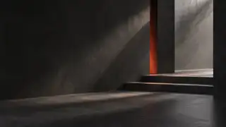

Stone Threshold
Generated architectural background. No logo or new mark is included. Only the small web preview is stored here; native crops and the original remain OPEN for repository transfer.
Proposed neutrals: charcoal #242321 and bone #F4F0E8. Approved accent: #EF4B32. These are working palette references, not measured image colors.

آستانهٔ سنگی
پسزمینهٔ معماری جنریتشده، بدون لوگو یا نشان تازه. فقط پیشنمایش کوچک وب در این بخش ثبت شده است؛ انتقال نسخههای برشخورده با ابعاد طبیعی و تصویر اصلی هنوز OPEN است.
رنگهای خنثی پیشنهادی: زغالی #242321 و استخوانی #F4F0E8. رنگ شاخص تأییدشده: #EF4B32. این کدها مرجع پیشنهادی پالت هستند، نه اندازهگیری رنگ تصویر.